このアプリについて
恐竜カード図鑑は、販売している恐竜のトレーディングカードと一緒に使うiPhoneアプリです。カードには、その1枚ごとのシリアルQRコードが付いています。アプリでそのQRコードを読み取ると、そのカードを取得したこととして図鑑に記録します。
取得したカードはカラーで表示され、説明を開けます。まだ取得していないカードは小さくグレーで並び、詳細は開きません。
使い方
1. カードを手に入れる
販売しているトレーディングカードに、シリアルQRコードがあります。
2. Appleでサインイン
取得の記録には、Appleでのサインインが必要です。氏名とメールアドレスは求めません。
3. QRコードを読み取る
アプリのカメラでカードのQRコードを読み取ります。同じQRコードを再度読み取っても、枚数は増えません。
15種のカード
図鑑には、次の15種が入ります。
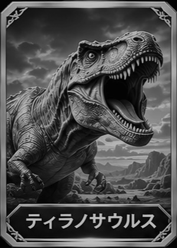
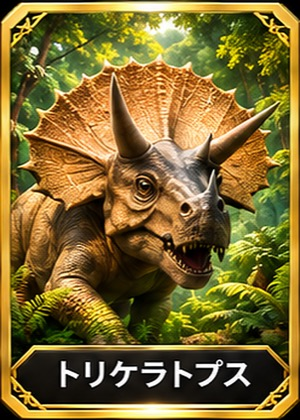
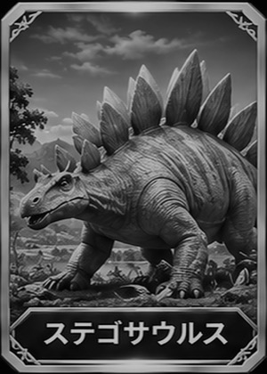
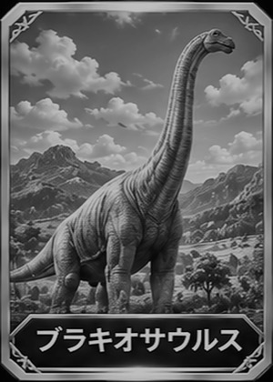
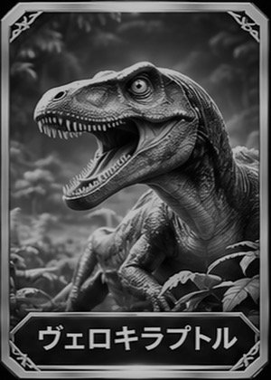
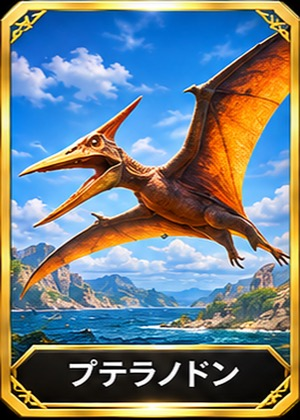
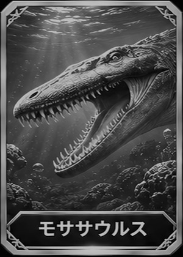
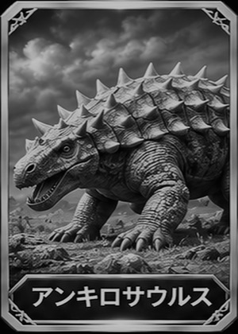
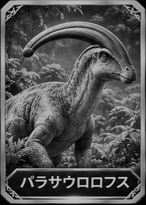
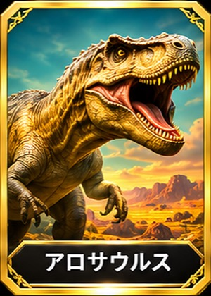
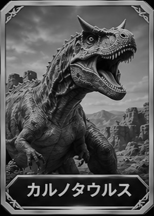
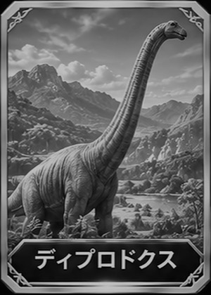
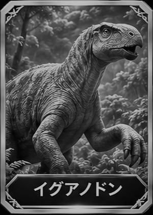
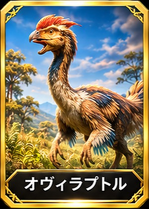
記録はこの端末の中だけ
取得の記録とサインインに使うユーザー識別子は、このiPhoneの中に保存します。サーバーへは送りません。別の端末への同期や、機種を変えたときの復元はできません。
詳しくはプライバシーポリシーに書いています。
サポート
ご質問はメールで受け付けます。
support@corevista.jp